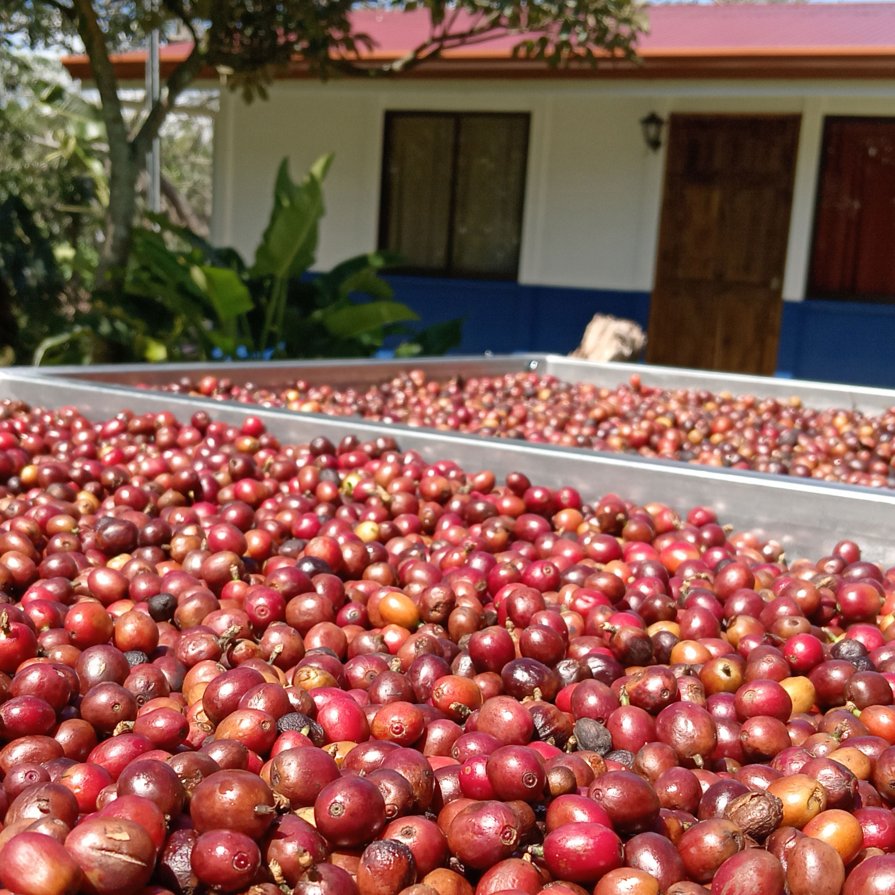

Una historia que comenzó hace generaciones
y continúa hoy.
Orejiblanco es el resultado del trabajo y la
dedicación de nuestra familia, arraigada en
San Bosco de Santa Bárbara de Heredia.
Desde hace generaciones cultivamos café con
respeto por la tierra y por las personas.
Con el tiempo hemos aprendido que el mejor café
nace cuando cuidamos el suelo, la biodiversidad
y cada detalle del proceso.
Hoy, Orejiblanco representa nuestro compromiso
con la calidad, la sostenibilidad y con las
futuras generaciones.
1.325 m s. n. m.
San Bosco, Santa Bárbara de Heredia · Costa Rica
El café nos ha dado raíces,
la tierra nos ha dado todo.
OREJIBLANCO
Quiénes
somos

Orejiblanco es una finca cafetalera familiar ubicada
en las tierras altas de Heredia, Costa Rica, donde
producir café significa también cuidar la tierra
que lo hace posible.
Nuestro trabajo parte de una convicción:
la calidad del café comienza en la salud del suelo.
Por eso hemos venido desarrollando prácticas orientadas
a su regeneración y al equilibrio natural de la finca.
Mantenemos una política de
cero herbicidas,
aprovechando coberturas vegetales, residuos de poda y
otros materiales orgánicos para proteger y enriquecer
el suelo.
Contamos con el
Galardón Bandera Azul Ecológica
,
un reconocimiento que refleja nuestro compromiso con
la protección del ambiente y con la implementación de
buenas prácticas dentro de nuestra finca.
En nuestra finca también elaboramos y utilizamos
bioinsumos y enmiendas
,
incorporamos fertilizantes de origen orgánico y buscamos
alternativas de manejo que permitan reducir
progresivamente la carga de insumos químicos.
Para el control de plagas y enfermedades priorizamos
métodos de manejo orgánico y preventivo.
Al mismo tiempo, entendemos que algunos insumos
convencionales pueden ser un complemento necesario para
asegurar una producción estable y saludable cuando las
condiciones lo requieren.
Nuestro objetivo no es simplemente eliminar insumos,
sino utilizarlos de manera responsable y reducir su
dependencia siempre que sea posible.
Calidad que
nace del cuidado
Nuestro café ha encontrado una buena aceptación y
actualmente nuestra producción forma parte del
Programa Nespresso AAA Sustainable Quality™
,
desarrollado en colaboración con
Rainforest Alliance
y a través de Volcafe, empresa a la que
entregamos nuestro café en fruta.
Esta relación nos ha permitido acceder a
capacitaciones, asistencia técnica, incentivos
y acompañamiento en campo
,
que contribuyen a mejorar nuestras prácticas agrícolas,
la calidad del café y la sostenibilidad de nuestra
producción.
Pero para nosotros la sostenibilidad también significa
cuidar a las personas.
Durante la cosecha procuramos brindar un trato respetuoso
y digno a quienes nos ayudan en la recolección del café,
reconociendo que detrás de cada grano existe el trabajo
de muchas personas que hacen posible llevarlo de nuestra
finca a la taza.
Aprender, compartir
y seguir mejorando
El desarrollo de Orejiblanco también ha sido posible
gracias al conocimiento compartido. Agradecemos
especialmente el acompañamiento y las oportunidades de
aprendizaje que hemos recibido de instituciones como el
Ministerio de Agricultura y Ganadería (MAG),
ICAFE, INA y UNA
,
así como de amigos, colegas y otros productores.
Las capacitaciones, talleres, asistencia técnica,
trabajos de campo e intercambio de experiencias nos han
permitido experimentar, aprender y encontrar nuevas
formas de trabajar nuestra finca.
En Orejiblanco seguimos aprendiendo de la tierra,
de las personas y de quienes comparten nuestro
compromiso con una caficultura más responsable.
OREJIBLANCO
Café para
disfrutar en casa.
Nuestro café nace en las montañas de Santa Bárbara
de Heredia, donde cultivamos y cuidamos cada detalle
desde la finca hasta la taza.
CAFÉ OREJIBLANCO
Nuestro café
Disponible en tres presentaciones para disfrutar
Orejiblanco en casa, regalar o compartir.